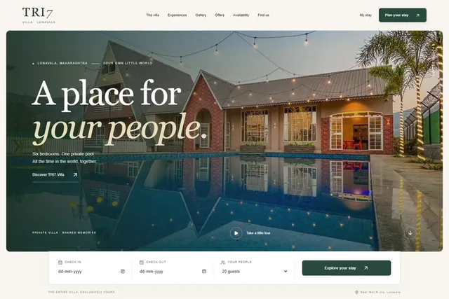

FULL-STACK APPLICATIONTRI7 Villa
01 / 2026A hospitality platform connecting the guest journey with inventory, enquiries and owner operations.
Behind The Build
The Challenge
Bring property discovery, guest enquiries and reservation management into one coherent experience.
The Implementation
Responsive property pages, account flows, database-backed inventory and a role-based operations portal. Payment integration is prepared; live gateway checkout remains dependent on merchant activation.
What This Demonstrates
Working across interfaces, application state, relational data and deployment, with unit and integration checks in the project.
Explore The Website ↗